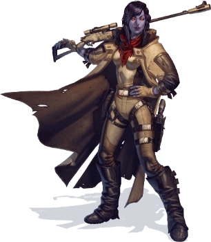

Chiss

Tratti dei Chiss
| Aumento dei punteggi caratteristica | Il punteggio di Intelligenza aumenta di 2 ed il Carisma aumenta di 1 |
| Eta' | I chiss raggiungono la maturita' intorno ai 18 anni e vivono per meno di un secolo |
| Allineamento | Tendente al lato legale oscuro della forza |
| Taglia | Media |
| Velocita' | 9m |
| Competenza Marziale | Sei competente nell'utilizzo di armature leggere e medie e nell'utilizzo di pistole pesanti e fucili di precisione |
| Avvezzi nella Politica | Sei competente nell'abilita' Intuizione |
| Resistenza alla Tecnologia | Ottieni vantaggio nei tiri salvezza su Destrezza ed Intelligenza contro i poteri tecnologici |
| Scurovisione Migliorata | Vedi 36m attraverso luce fioca come se fosse luce intensa e nell'oscurita' come se fosse luce fioca. Nell'oscurita' non vedi i colori, solo gradazioni di grigio |
| Linguaggi | Sai parlare, leggere e scrivere: Galattico base, Cheunh ed uno a scelta tra Minnisiat o Sy Bisti |